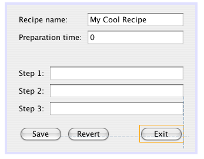
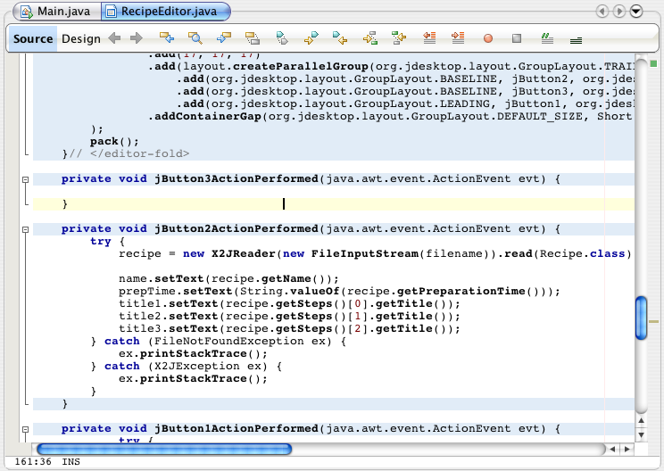

Article: Visual Studio User Tries Matisse
Contributed by: Aviad Ben Dov, software designer and developer
When I first tried out the NetBeans GUI Builder Matisse, I was as skeptical
as I would be with any Java GUI builder.
They never turn out to be exactly what you'd expect;
even IDEA's designer, simplifying GridBagLayout to just a few clicks and properties,
doesn't have the same feel as Visual Studio 2005.
Whatever my feelings were before trying Matisse, I was surprised after using it:
Not only did Matisse do everything I expected a GUI editor to do,
it even offered new features that really made me raise an eyebrow wondering,
"Why did no one else think of this before?"
In this article I will present the features I enjoyed best in Matisse,
and then suggest a few features I would like to see in future releases.
Matisse Features
Matisse presents the developer with some new and surprising features -
including some that have been long awaited amongst the GUI editing community.
Free Form Layout
Matisse's default layout manager, the new GroupLayout, is just great.
It allows you to place controls anywhere you want them.
Resize them, move them, and snap them to other controls,
and watch it all come together when you preview the form or execute your application.
The best part is that the sizing and locations are later determined by the loading OS's look and feel,
so that you can be almost sure there won't be any running back and forth between a Windows XP machine,
a Linux machine and a Mac, just to see that the form looks great in all possible variations. It will.
The Matisse Editor
What makes the layout manager even better is Matisse itself, the user interface editor.
Snap controls to other controls or to a container and choose whether the snapping
should occur for the location of the controls or also for their size, all by simply using your mouse.

Matisse provides the developer with a real drag, drop and stretch experience:
Drag your control from the toolbox, drop it on your form
(noticing that the panels are highlighted when moved over!),
resize the control, and then using visual guide lines snap it to basically anything on the form.
Another nice feature of Matisse is that you can always figure
out its resizing and relocation logic. At any time, you can
select a control to display the anchors that explain expected size
and location changes, even if it's a snap connection between two
other controls.
Connections Manager
Matisse allows you to define connections between a control's event
and another control's or a JavaBean's property.
This gives you the ability to bind a control's state to the properties of another control
or to those of a JavaBean, or to have a change in a control's state trigger a change in another's,
for example a checkbox that, when selected, enables a set of buttons and text boxes.
This connection is made via a simple three step wizard,
followed by an option to edit the code automatically generated by Matisse.
Small Footprint and High Speed
NetBeans has a small enough footprint.
It runs easily on my iBook G4 with 256MB RAM seems smooth enough to actually do some work,
and that's reassuring for me as an on-the-roads developer.
What was surprising though was that Matisse didn't raise the memory bar by more than a few megabytes,
and kept its memory usage no matter what was added to the form.
The speed was impeccable as well:
NetBeans continued to run smoothly no matter how many snaps and connections were added to the form.
Matisse's Look and Feel
NetBeans uses the native look and feel of the system you're working on.
This nativeness of the IDE gives you the feeling of working on a product made for your environment,
which means you know exactly what to expect:
A tab will look like a tab, a button like a button, and so on and so forth.
The native look and feel is very helpful when you are working with Matisse,
because you can see how the form is going to look before running it or previewing it,
directly on your designer window.
The Preview option in Matisse helps even more by enabling the developer to resize a form
to see how the controls all play together, but as said above,
it's possible to tell how a form will look like straight from the designer.
Generated Code
The generated code is cross-IDE, with the exception
that using the default layout manager means exporting the layout manager's .jar file.
Besides that, any IDE should be able to handle the code generated,
which is a huge advantage when working in a team that is using a diverse set of IDE tools.
Now, the first thing I love doing when encountering generated code is to mess around with it.
Change names, delete portions of code, make the code uncompilable,
and see the editor throw error messages and in some cases even crash.
The first thing I noticed with Matisse is that I just can't do that.
Matisse keeps its generated code read only (marked with blue for your attention)
when viewed from within NetBeans.
(By generated code I mean the form building itself, as well as event methods' definitions.)

This is a great feature, as it prevents mistakes and allows the generated code
to be truly separated from the form's logic, even if it is written in the same class file.
Further, the generated code is folded so that it can't be seen
unless the developer really wishes to see it.
No matter, NetBeans can't prevent me from changing the code outside the editor.
This is relevant in case someone with a different editor decides to change the form by code,
and in doing so, breaks the form's code.
Having done that, Matisse didn't even budge.
Apparantly, Matisse keeps a .form file for every form the user creates.
This file is an XML document representation of the original form,
and Matisse uses this document when the form is edited and when the form's code is generated.
My Wishlist for Future Releases
These are my own speculations, or should I say ideas,
about what should come in future releases of NetBeans in regards to Matisse.
I think that the team developing Matisse has really done a great job with it,
and that from here it can only keep improving in order to keep its supremacy among GUI editors.
Improved JavaBeans Binding
Ultimately, the form is simply a way to communicate with the user.
JavaBeans are the instances containing the information communicated back and forth from the form,
and having them easily bound to the form's controls is highly important.
I think that on top of the connections manager's option to connect between an event
to a JavaBeans property, Matisse should offer a way to bind a JavaBeans property to a control's value.
I would go even further and suggest a wizard which generates a JavaBean from a group of controls on a form,
and in so doing, separating the form's logic from the form's class file even more.
Better Support for Other Layouts
Matisse handles its own GroupLayout brilliantly,
but fails to provide the same level of support for the original Java layout managers.
In the future I would enjoy using Matisse in such a way that dragging a control onto a
BoxLayouted panel would highlight the area the control would take,
and maybe even move the controls already on that panel to show how it will look after placing the control.
Automatic Conversion From Other Layouts
Not every application is a new application,
and some code is old, using a diversity of BoxLayout, GridBagLayout and FlowLayout
to make a form fulfil its developer's desires.
Matisse should allow for automatic conversion from these layouts to the new, free-form layout,
by keeping old events and control names and keeping the form's old presentation
by supplying automatically generated snaps to the controls.
Some Conclusions
It's obvious that to me, Matisse is the number one GUI editor for Java,
and in more than one way, the number one GUI editor on all platforms.
Considering the past of NetBeans, starting out fresh with something like Matisse
is just a sign for what's coming, and there's no doubt that
even though I first looked at the new NetBeans with scepticism,
I'd be looking at the next release with anticipation.
About the Author
Aviad Ben Dov is a software designer and developer,
working on enterprise applications in both .NET and Java.
He is a long time user of both Visual Studio and IntelliJ IDEA.
Links for Further Reading
Aviad Ben Dov's Java Blog
Quick start guide for Matisse
Flash demo of Matisse
Interview with creators of Matisse